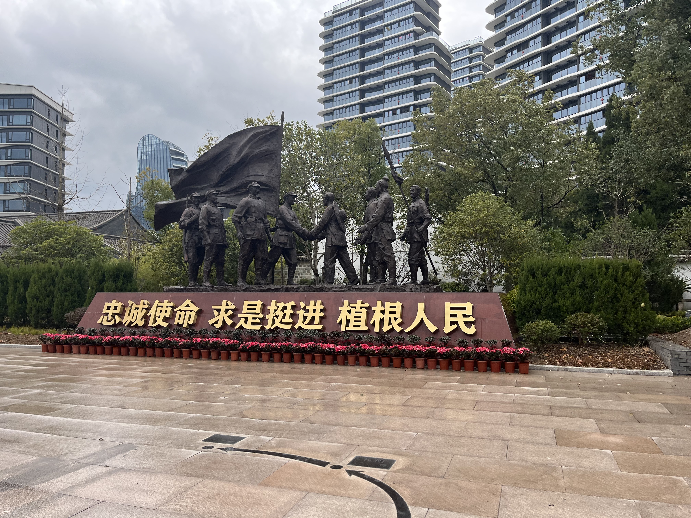

1935 年 4 月 27 日夜，斋郎村的煤油灯亮了一宿。19 岁的村民吴阿婆（时名吴小妹）攥着刚烙好的玉米饼，跟着父亲往村东头的红军指挥部跑 —— 那里，粟裕正对着地图，用铅笔在牧牛场、岙头淤两个点重重圈画。
“首长，这两个山坳我熟，藏一百个人都看不见！” 吴阿婆的父亲吴长发是村里的猎户，主动请缨当向导。此时，国民党浙闽保安团与大刀会 3000 余人已兵分三路包围村庄，而挺进师仅 500 余人，且经过连日行军疲惫不堪。粟裕握着吴长发的手说：“老乡，这一仗不仅要打赢，还要让浙西南的百姓知道，红军是为他们打仗的！”
4 月 28 日拂晓，战斗在牧牛场打响。敌军以为红军会沿大路撤退，没想到挺进师早已在吴长发指引下，在山坳里挖好了战壕。大刀会信徒光着膀子冲锋，被红军的机枪火力压制在开阔地；保安团试图从岙头淤包抄，却被埋伏的红军小分队分割包围。吴阿婆和村里的妇女们则在后方忙碌：烧开水、包扎伤员，把自家的门板拆下来当担架。16 岁的少年吴石头冒着枪林弹雨，往返战壕 8 次运送弹药，裤腿被流弹击穿也浑然不觉。

正午时分，敌军发起总攻，指挥部附近突然响起枪声 —— 一股残敌突破外围防线。正在送水的吴长发抄起墙角的柴刀冲上去，与红军战士并肩作战，身中两枪仍死死抱住敌军小队长的腿，为战士争取了射击时间。当粟裕指挥预备队发起反击，彻底击溃敌军时，吴长发已倒在血泊中，手里还攥着战士掉落的红星帽徽。
战后，挺进师在村里召开庆功会，粟裕亲自为吴石头佩戴 “支前小英雄” 红袖章，承诺革命胜利后一定回来探望。1952 年，已是解放军高级将领的粟裕派人寻找斋郎村的乡亲，得知吴长发牺牲的消息后，专程寄来抚恤金与亲笔信，信中写道：“斋郎大捷的军功章，一半属于红军，一半属于斋郎的百姓。”
如今，吴阿婆当年运送弹药的竹篮、吴长发的柴刀，都陈列在红军讲堂里。每年清明，村里的孩子都会捧着鲜花来到战斗纪念碑前，听老人讲述那段 “云端上的生死决战”。
返回